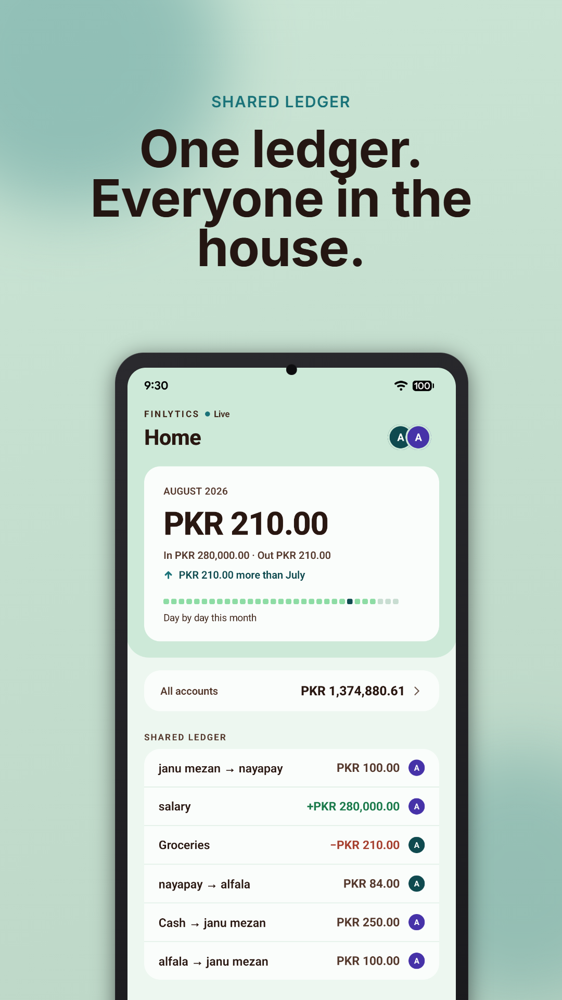
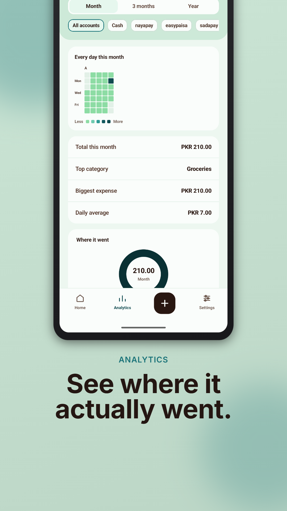
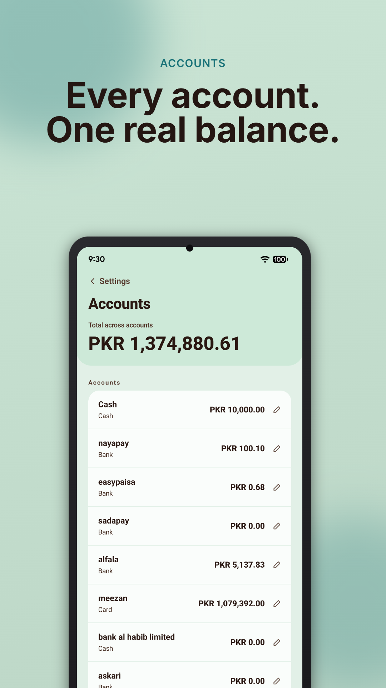

One ledger. Everyone in the house.
Most expense trackers assume one person. Rent, groceries and bills rarely are. Finlytics gives a household one set of books that everyone writes to — and it works with no signal, syncing itself when you are back.
Get it on Google Play Free to use on your own. Premium adds household sharing.


What it does
One shared ledger
Every member sees every transaction, who paid it, and which account it came from. Your household exists the moment you sign in; there is nothing to set up.
Expenses, income and transfers — kept apart
A salary does not read as spending, and moving money between your own accounts does not either. The spending figures stay honest.
Real balances
Cash, bank and card accounts each carry a running balance, and you can send money to another member's account. Money can only leave an account you own.
Works offline
Log something with no signal and it is saved straight away, then syncs itself when you are back. A badge tells you whether you are live, syncing or behind.
Spending you can actually read
A day-by-day heatmap, a category breakdown, a month-on-month trend, and a filter for any single account.
No bank login, ever
There is no account linking and no third party between you and your money. You type what you spent — the only method that works for cash anyway.
Contact
Questions, bugs, or anything about your data: app.finlytics@gmail.com